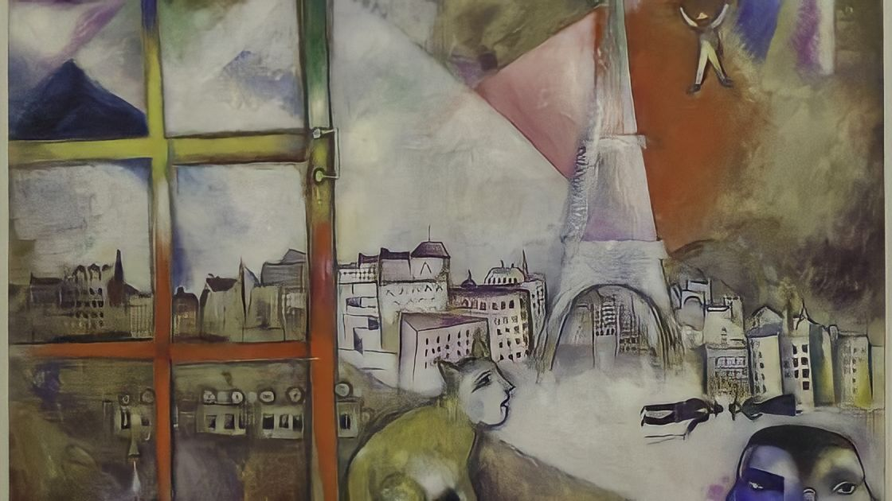

|  | |
Art and the Eiffel Tower |
|
☼ From the beginning the Tower was an attraction, but in the 1920s it became a symbol of modernity and the avant-garde. Little by little, its image was associated with Paris, until it even became its worldwide symbol. ☼ Poets, painters, singers, choreographers, film directors, and photographers have all paid homage to it. |
|
Painting and the Eiffel Tower |
|
☼ Ahead of their time, painters made the Tower into a favourite subject, and contemporary artists continue to use it as a model. ☼ Georges Seurat painted it in 1888, before it was even finished. Later on, le Douanier Rousseau, Signac, Bonnard, Utrillo, Gromaire, Vuillard, Dufy, and Chagall all celebrated the Tower. From 1910 Robert Delaunay gave it cubist aspects in a whole series of canvas paintings. |
|
A few painters :- ‣ 1888 - Georges Seurat (Fine Arts, Museum of San Francisco). ‣ 1889 - Jean Beraud (Musée Carnavalet, Paris). ‣ 1890 - Le Douanier Rousseau (Narodni Galerie, Prague). ‣ 1899 - Paul Signac (Coll. Particulière). ‣ 1910/1912 - Robert Delaunay (MNAM - Centre G. Pompidou, Paris). ‣ 1911/1912 - Robert Delaunay (S.R. Guggenheim Museum, New York). ‣ 1912 - Romaine Brooks (MNAM - Centre G. Pompidou, Paris). ‣ 1913 - Marc Chagall (S.R. Guggenheim Museum, New York). ‣ 1954 - Nicolas de Staël (Musée d'Art moderne, Troyes). ‣ 1954/1955 - Marc Chagall (Musée Folkwang, Essen). |
|
The Eiffel Tower, a muse for the seventh art |
|
| ☼ Filmed by Louis Lumière from as early as 1897, and present ever since in a considerable number of productions, the Eiffel Tower was all the more tied to the adventure of cinema as Gustave Eiffel contributed as a silent partner to the company created by Léon Gaumont in 1895. During the 20th Century, the Eiffel Tower became the symbol of Paris and of France throughout the world. From the beginnings of cinema to today, its presence has given us somewhere to set the plot, or allowed us to give our works a timeless or romantic edge. | |
‣ 1897 - de Louis Lumière ‣ 1900 - de Georges Méliès. ‣ 1906 - de Georges Hatot. ‣ 1924 - de René Clair. ‣ 1927 - de Julien Duvivier. ‣ 1928 - de René Clair (documentaire). ‣ 1931 - d’Abel Gance. ‣ 1939 - de Jean Denis. ‣ 1947 - de Alain Pol. ‣ 1949 - de Burgess Meredith. ‣ 1953 - de Jean Image (dessin animé). ‣ 1955 - de Claude Autant-Lara. |
‣ 1980 - de Richard Lester. ‣ 1981 - de Claude Lelouch. ‣ 1983 - de José Giovanni. ‣ 1984 - de Philippe Labro. ‣ 1985 - de John Glen. ‣ 1997 - de A. Waller. ‣ 2000 - de Harriet Marin. ‣ 2003 - (le Fugitif) d’Andrea Manni. ‣ 2005 - de Simon Brook. ‣ 2006 - de Ron Howard. ‣ 2007 - » de Brett Rattner. ‣ 2010 - de Pierre Morel et, de Luc Besson. |